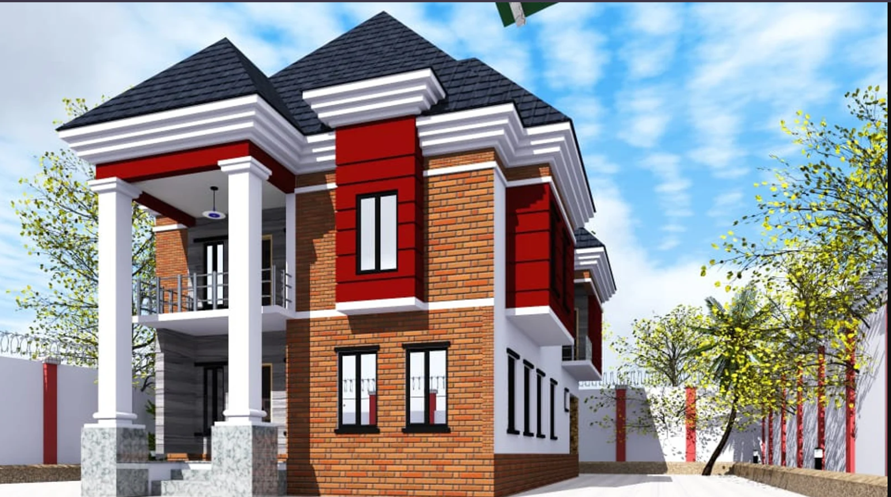

The Modern Duplex project is a clear demonstration of how innovative construction methods can deliver both quality and cost efficiency. Built using interlocking brick technology, this project achieved a 25% reduction in overall construction cost compared to traditional building methods.
Located in a developing residential area, the duplex was designed to meet modern housing standards while maintaining structural strength and durability. The use of interlocking bricks eliminated the need for excessive cement, reducing material costs and speeding up the building process.
Beyond cost savings, the project also benefited from:
The finished structure reflects a balance of modern design, affordability, and long-term durability, making it an ideal choice for homeowners and investors looking to build smarter in Ghana.
This project stands as proof that with the right building approach, clients can achieve high-quality results while staying within budget.
← Back to Projects